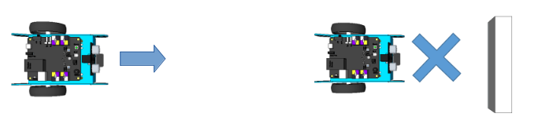
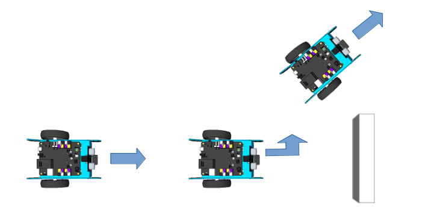
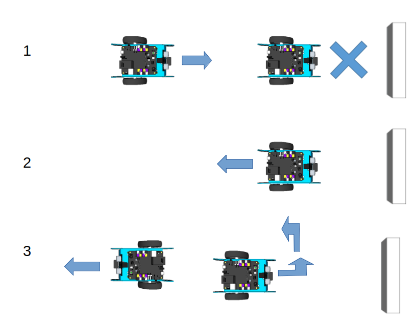
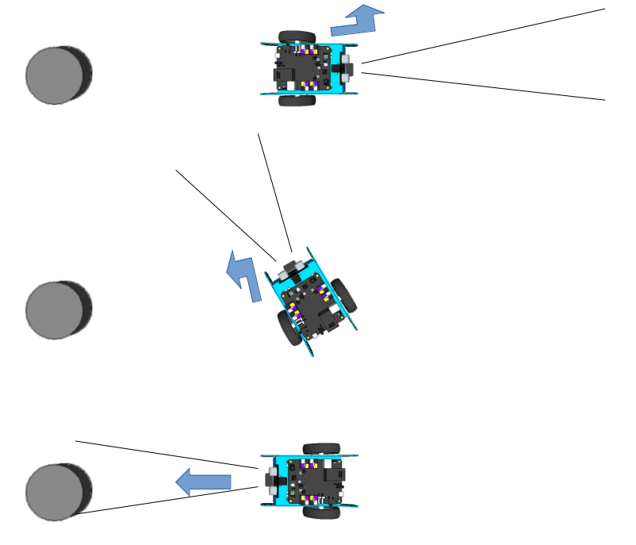
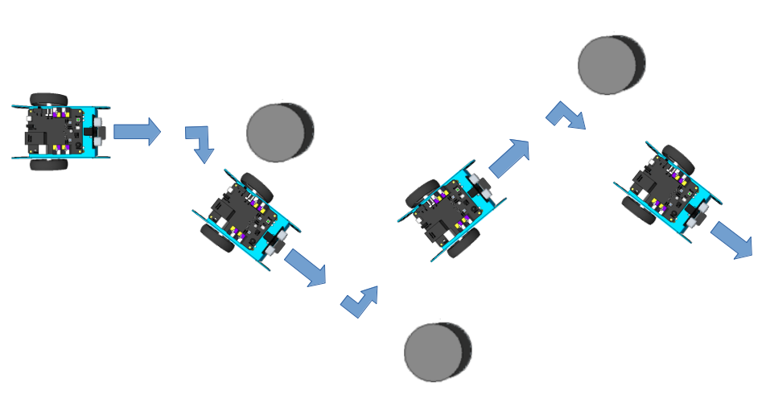

Défis janvier 2020
Programme pour tester le moteur du robot
Ecris le programme suivant et téléverse le dans le robot.
Essaie de comprendre ce que va faire le robot. Est-ce qu'il va s'arrêter à la fin du programme ?

Défi 1: s'arrêter devant un obstacle
Utilise le capteur de distance (capteur ultrason) pour détecter quand un obstacle est à moins de 10 cm du robot.
Le robot doit avancer s'il n'y a pas d'obstacle et s'arrêter quand il détecte l'obstacle.

Tu dois mettre les 3 bonnes valeurs qui manquent dans le programme.

Défi 2: tourner devant un obstacle
Le robot doit avancer s'il n'y a pas d'obstacle et tourner à gauche si un obstacle se trouve à moins de 10 cm.
Le robot recommence à avancer après avoir tourné.

Défi 3: faire demi-tour devant un obstacle
Le robot doit avancer s'il n'y a pas d'obstacle. Si un obstacle se trouve à moins de 10 cm, il doit reculer et faire demi-tour.-tour
Le robot recommence à avancer après avoir fait son demi-tour.

Défi 4: rechercher une cible et avancer dans sa direction
Le robot doit rechercher une cible et avancer jusqu`à cette cible.
Si la distance qui sépare le robot de la cible est inférieure à 20 cm, le robot avance jusqu'à la cible.
Sinon le robot tourne sur lui-même jusqu'à ce qu'il détecte la cible à moins de 20 cm.

Défi 5: slalom
Le robot doit slalomer entre des obstacle.
Le robot avance, s'il détecte un obstacle à moins de 10 cm, il tourne à droite pendant 0,2 secondes, et recommence à avancer.
S'il rencontre un autre obstacle, il tourne vers la gauche pendant 0,2 secondes et recommence à avancer.
Et ainsi de suite pour chaque obstacle, il tourne une fois à droite, une fois à gauche, une fois à droite, une fois à gauche, ...d ...

Défi 6: slalom des pompiers
Comme le défi 5 mais le robot possède un gyrophare (des leds qui clignotent en rouge)
et une sirène (notes B et A jouées durant 2 secondes en boucle).